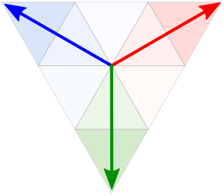

Тож давайте роздивимося деталі і вичемо поведінку виборців у різних регіонах.
Ось так виглядає знайомий всім загальнонаціональний контекст - низький рівень підтримки проросійських та комуністичних партій (червоні) на Заході, і високий на Сході і Півдні. Чи це досі так?
На мапі представлені результати підтримки політичних сил по дільницях. Одна стрілочка - одна дільниця.

2006
2007
2012
2014
2019
Загубили на карті Україну? Тицяйте сюди!
Уявімо політичні уподобання виборців у вигляді трикутника, де червоний кут - проросійські та комуністичні сили, синій - національно-демократичні, зелений - популістські. Що довша лінія, то яскравіше виражена прихильність виборців до політичного вектора. Якщо лінія коротка або її взагалі немає, значить підтримка всіх сил близька до однакової - 33.3% і лише кілька відсотків в той чи інший бік визначили колір стрілки.
Поступовий зсув в сторону більшої підтримки національно-демократичних сил розпочався після Майдану 2005 року. У 2007 році стає помітним електоральний поворот Полтавської і Черкаської областей. Проросійські та комуністичні сили помітно втратили тут свої позиції, здебільшого на користь Батьківщини. Перемикайтесь між роками, щоб порівняти результати по роках. Карту можна зумити кнопками +/- у лівому верхньому куті карти.
У 2012 році меншає кількість прихильників проросійських та комуністичних сил у Дніпропетровській, Кіровоградській та Херсонській областях, зокрема в Дніпрі, Нікополі, Херсоні, Знамʼянці, Олександрії та інших містах півдня і центру України.
Водночас Партії регіонів вдається мобілізувати виборців з сільських місцевостей. Документи по справі Манафорта свідчать, що в Центральній та Західній Україні Партія регоінів перед виборами 2012 року обрала стратегію інтеграції місцевих еліт у свої лави. І це принесло певний успіх, зокрема у Вінницькій, Хмельницькій та Закарпатській областях.
На виборах 2014 року після подій на Майдані та російської інтервенції Україна майже одностайно підтримала проукраїнські сили.
Зросла гетерогенність електоральної підтримки всередині Одеської, Харківської та Дніпропетровської областей, які до цього були більше консолідовані навколо проросійських сил. Теж саме стосується підконтрольних Україні територій Донецької та Луганської областей.
Цікавий факт, хоча Любешівський район це Волинь, але це не завадило комуністам там перемагати в 2006-2012 роках. Навіть в 2014 р., після Революції Гідності, одна дільниця віддала перевагу комуністам - в селі, де народився один з лідерів партії (неодноразово заступник голови Верховної Ради) Адама Мартинюк. Однак, це не лише ефект друзів та сусідів, а й продуманої електоральної кампанії - Мартинюк був високопосадовцем і в 2002 році, але тоді КПУ не здобула підтримки в районі.
І хоча на виборах 2019 року національно-демократичні сили отримали менше підтримки ніж у 2014 році, після 2014 року настав серйозний перелом в електоральній карті України. Навʼязаний нам за часи Кучми поділ на проукраїнській Захід/Центр та проросійський Схід/Південь почав сипатись. Адже у електоральному вимірі Україна це більше ніж просто Схід та Захід, а аналіз результатів виборів це більше ніж узагальнення по областях чи регіонах.
Інтерактивна карта дає змогу виявити райони та міста, які голосують відмінно від свої регіонів. Інколи це лише тимчасові електоральні успіхи якоїсь з партій на одних виборах, які розсіюються на інших. Водночас багато локальних місць має довготривалі особливості політичних поглядів.
Наприклад, м. Горішні Плавні (Комсомольськ) в 2006-2019 не слідувало електоральному повороту Полтавської області і було найбільш прорегіоналівським.
А м. Нікополь навпаки в 2006-2012 роках стійко демонструвало найвищу підтримку “національно-демократичних” сил в Дніпропетровській області.
Місто Славутич Київської області в 2006-2012 роках теж випало з обласного тренду і підтримувало Партію регіонів.
Місто Южноукраїнськ у Миколаївській області в 2006-2014 рр. стабільно показує найвищий рівень підтримки “національно-демократичних” сил в області.
А Недригайлівський район, де народився Віктор Ющенко, теж рекордно підтримував Нашу Україну в Сумській області в 2002-2007 рр.
Ці приклади, які ви можете віднайти на графіках нижче. Тут виборчі дільниці сгруповані відповідно до району або міста, де вони знаходяться.
Протягом 2006-2012 рр. три галицькі області (Львівська, Івано-Франківська та Тернопільська) і дві донбаські (Донецька та Луганська) мали найменші внутрішні відмінності у підтримці партій.
Водночас Житомирська, Закарпатська, Чернівецька, Сумська та Чернігівська області в 2006-2012 рр. мали більші відмінності в електоральних уподобаннях між їх районами ніж окремі області між собою.
Внутрішньорегіональні відмінність виборчих уподобань в Україні у 2006-2019 роках виявляє, що існують так звані outliers, що стабільно відрізняються від решти регіону політичними переконаннями. Закарпатська, Чернівецька, Чернігівська, Сумська та Житомирська області мали найвищі середні внутрішньорегіональні відхилення.
У випадку Чернівецької та Закарпатської областей це райони з найбільшою долею етнічних меншин.
Подивимось, наприклад, на Закарпатську область. В Берегівському районі три-четвертих населення це угорці, в місті Берегове угорське населення складає близько половини. Саме тут найнижчий рівень підтримки “національно-демократичних” сил, що в 2012 році було ефективно використано Партією регіонів. Однак, в таких районах як Виноградівський (одна четверта населення угорці) чи Ужгородський (третина населення угорці) таких тенденцій голосування як в Берегівському районі немає. Наведіть мишею на точку, аби подивитись назву району чи міста.
Навіть у 2019 році після проукраїнської хвилі 2014 року, в зазначених районах проросійські сили все рівно набрали найбільше
Схожа ситуація у Чернівецькій області. Герцаївський районі, де більшість населення це румуни (близько 90%) та Новоселицький, де близько 57% за останнім переписом молдаваниі - зміщені в сторону підтримки "проросійських та комуністичних сил". Тоді як Глибоцький район, де майже половина населення румуни чи Сторожинецький, де румуни складають близько третини населення не показують таких закономірностей голосування.
Таким чином саме переважання в структурі населення національної меншини, а не просто її значна частка (навіть коли це 45% як у Глибоцькому районі) виливається у зміни електоральних уподобань. При цьому сумнівним є вплив етнічної приналежності самої по собі, без її використання в електоральній стратегії партії, доступу до адмінресурсу в районі, союзу з місцевими елітами чи розвитку місцевого партійного осередку. Це говорить радше про важливість місцевої політики, а не реакції національних меншин на те, що відбувається на національному рівні. На позначення цього явища існує термін “етнополітичне підприємництво”. Тобто коли етнічні межі використовуються для досягнення політичних цілей. В Україні це виглядає так, що політичні сили домовляються з правильними людьми і отримують голоси, а не тому що в певної етнічної громади є свої інтереси і вони їм слідують у своєму політичному виборі.
Варто згадати і про те, що територія Чернівецької області довгий час була поділена між Австрійською та Російською імперіями. І цей давній кордон досі проявляється на електоральних мапах. Електоральна поведінка в Сокирянському, Хотинському, Кельменецькому та Новоселицькому районах, які були в складі Російської імперії зміщена в сторону “комуністичних та проросійських” сил у порівнянні з районами, які були частиною Австрійської імперії. Це, поруч з етнополітичним підприємництвом, робить електоральну географію Чернівецької області настільки строкатою.
Ще один приклад впливу історичних кордонів - північні райони Тернопільської області, які були частиною Волинської губернії Російської імперії на противагу входженню іншої частини Тернопільської області до Австрійської імперії. Цікаво, що ця лінія розмежування відчутно проявилася лише в 2012 році, коли Партії регіонів вдалося досягти стратегічного успіху на цих теренах в порівнянні з територіями області по-іншу сторону вже не існуючого фізично, але проявленого на електоральних мапах кордону.
На півночі Сумщини Середино-Будський район, що стабільно виказує найбільшу в області підтримку проросійські сил, має найнижчий рівень етнічних росіян (51.6%), але високий рівень російськомовних мешканціві відповідно до даних Census за 2001 р. В той час як Великописарівський район, що є другим за кількістю етнічних росіян і третій за кількістю російськомовного населення, не має подібних електоральних преференцій. Те саме стосується Чернігівської області. В Чернігові проживає більше російськомовного населення ніж в Семенівському району, але підтримка національно-демократичних сил в Чернігові вища.
З іншого боку Житомирська область яка не має істотних відмінностей в структурі населення теж серед областей, які демонструють найбільші внутрішньорегіональні відмінності. Місто Коростень був комуністичною фортецею Житомирської області протягом 23 років, поки в Україні не заборонили Комуністичну партію.
Можливо питання електоральних уподобань це у значній мірі питання місцевих політичних еліт і мобілізації електорату на місцях, які є невивченими в Україні.
Мовні, етнічні, соціально-економічні змінні також не мають пояснювальної сили для таких конкретних випадків, як внутрішньорегіональна різниця виборчої поведінки міст та районів.
Наприклад, в Харківській та Кіровоградській області в містах проживає більше етнічних росіян та російськомовних, проте на виборах 2006-2012 рр. ми можемо побачити значну різницю. Кропивницький і Світловодськ віддали більше голосів за проукраїнські політичні сили, так само як Харків і Люботин.
Більшість партій в Україні тяжко назвати ідеологічними. Класифікація на основі програм партій не надійна, бо вони часто відрізняються від їх риторики і своїми загальними формулюваннями не дуже відрізняються одна від одної. Часто проросійськість партії проявляється лише з часом, під час голосування за важливі законопроєкти як от продовження Чорноморської бази в Криму, мовні питання тощо.
Всі партії, що подолали 1% барʼєр з 2006 по 2014 рік ми розділили на два табори - проросійські/комуністичні та національно-демократичні.
До проукраїнських партій ми віднесли: "Блок Юлії Тимошенко", ВО "Батьківщина", "Наша Україна", Блок "Наша Україна – Народна Самооборона, Український Народний Блок Костенка і Плюща, "Громадянський блок ПОРА-ПРП", УДАР, ВО "Свобода", Радикальна Партія Олега Ляшка, Народний Фронт, Блок Петра Порошенка, "Самопоміч", Громадянська позиція Гриценко, Заступ, Правий сектор, Європейська солідарність, Голос, Українська стратегія Гройсмана.
До проросійських та комуністичних: Партія регіонів, Соціалістична партія України, Комуністична партія України, Блок Наталії Вітренко "Народна опозиція", "Народний блок Литвина", Партія "Віче", "Опозиційний блок НЕ ТАК!", "Блок Литвина", Прогресивна соціалістична партія України, Партія Наталії Королевської "Україна – Вперед!", Опозиційний блок, "Сильна Україна" Сергія Тігіпка, Опозиційна платформа – ЗА ЖИТТЯ, Сила і честь, Опозиційний блок, Партія Шарія.
Партію "Слуга народу", що набрала більшість голосів на виборах 2019 року, ми не відносили до жодного з цих таборів, адже вона неоднозначною.
Для карти за основу ми взяли дільниці 2012 року - це перший рік, після якого номери дільниць не змінювались, тож легко ідентифікувати ту саму дільницю в 2012, 2014 та 2019 рр. Окрім цього адреси в 2012 році записані більш структуровано, тож їх геокодування є точнішим.
До адрес 2012 року ми приєднали адреси 2007 року. Таким чином, ми змогли встановити приблизний номер дільниці 2012 року в 2007 році. Чому приблизний, тому що межі округів змінились між 2007 та 20012 роком. Та зважаючи на те, що загалом люди голосують в тій самій дільниці, умовно їх можна прирівняти. Зведення адрес 2012 та 2007 років ми робили у QGIS за допомогою алгоритма приєднання атрибутів найближчої точки, а потім вручну перевіряли, чи правильно приєднались адреси. Перевірка потрібна була здебільшого для великих міст, наприклад, коли в одній школі розташовано 2 чи більше виборчих дільниць. Деякі дільниці настільки змінили межі, що приєднати їх до адреси 2012 року було неможливим, в такому випадку ми не приєднували. Таким чином ми втратили близько 3 тис. дільниць з 33 тис., але це дало змогу порівнювати настрої виборців в межах кожної відтвореної дільниці по роках.
Дільниці 2006 та 2007 року мали схожі назви адрес та ті самі номери дільниць в межах округу, тож знайшовши відповідних до 2012 року серед дільниць 2007 року, було нескладно встановити відповідник у 2006 році.
Для графіків траєкторій, ми витягнули з усіх дільниць за 2006-2019 рр. область та район. Назви районів/міст ми визначали, на основі даних Опори про виборчі дільниці. Для даних 2006-2007 рр. ми повитягували інформацію щодо району, міста та області максимально уніфікувавши їх з даними за 2012 рік.
Пожертвувати
TEXTY.ORG.UA — незалежне видання без навʼязливої реклами й замовних матеріалів. Щоб працювати далі, нам потрібна ваша підтримка. Також ви можете зробити пожертву щомісячною.